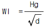
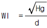
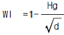
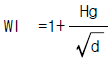

가스기능사 (2002-04-07 기출문제)
1과목: 가스안전관리
1. 연소의 종류가 아닌 것은?
- 확산연소
- 증발연소
- 반응연소
- 표면연소
(정답률: 65%)

2. LP가스의 저장설비나 가스설비를 수리 또는 청소할 때 내부의 LP가스를 질소 또는 물 등으로 치환하고, 치환에 사용된 가스나 액체를 공기로 재치환하여야 하는데, 이 때 공기에 의한 재치환 결과가 산소농도 측정기로 측정하여 산소의 농도가 얼마의 범위내에 있을 때까지 공기로 치환하여야 하는가?
- 4 - 6%
- 7 - 11%
- 12 - 16%
- 18 - 22%
(정답률: 77%)
3. 액화석유가스 용기 저장소의 시설기준 중 틀린 것은?
- 용기 저장실을 설치하고 보기 쉬운 곳에 경계표지를 설치한다.
- 용기 저장실의 전기 시설은 방폭 구조인 것이어야 하며, 전기스위치는 용기 저장실 내부에 설치한다.
- 용기 저장실 내에는 분리형 가스누출 경보기를 설치한다.
- 용기 저장실 내에는 방폭등 외의 조명등을 설치하지 아니한다.
(정답률: 67%)
4. 다음 중 가연성 가스이면서 독성 가스인 것은?
- 산화 에틸렌
- 프로판
- 불소
- 염소
(정답률: 58%)
5. 산화에틸렌의 저장탱크는 그 내부의 질소가스, 탄산가스 및 산화에틸렌가스의 분위기 가스를 질소가스 또는 탄산가스로 치환하고 몇 ℃이하로 유지해야 하는가?
- 0
- 5
- 10
- 20
(정답률: 48%)
6. 다음의 가스에 대한 일반적인 성질에 대한 설명 중 잘못된 것은?
- H2 - 고온 저압하에 탄소강과 반응하여 수소 취성을 일으킨다.
- Cl2 - 황녹색의 자극성 냄새가 나는 맹독성 기체이다.
- HCl - 암모니아와 접촉하면 흰연기를 낸다.
- HCN - 복숭아 냄새가 나는 맹독성 기체로 쉽게 액화된다.
(정답률: 51%)
7. 염소가스의 허용농도는?
- 0.1 ppm
- 0.5 ppm
- 1 ppm
- 5 ppm
(정답률: 43%)
8. 상용압력이 100 kg/cm2인 고압설비의 안전밸브 작동압력은 얼마인가?
- 100kg/cm2
- 120kg/cm2
- 150kg/cm2
- 200kg/cm2
(정답률: 54%)
9. 초저온 용기에 대한 정의로 옳은 것은?
- 임계온도가 50℃이하인 액화가스를 충전하기 위한 용기
- 강판과 동판으로 제조된 용기
- 임계 온도가 -50℃이하인 액화가스를 충전하기 위한 용기
- 단열재로 피복하여 용기내의 가스온도가 상용의 온도를 초과하도록 조치된 용기
(정답률: 83%)
10. 의료용 가스용기의 도색구분이 맞는 것은?
- 산소 - 회색
- 질소 - 흑색
- 헤리움 - 백색
- 에틸렌 - 주황색
(정답률: 56%)
11. 다음 중 웨베지수의 산식을 옳게 나타낸 것은? (단, Hg:도시가스의 총발열량, d:도시가스의 공기에 대한 비중)




(정답률: 56%)
12. 아세틸렌 가스의 압축시 희석제로서 적당하지 못한 것은?
- 질소,에틸렌
- 메탄,탄산가스
- 일산화탄소,프로판
- 산소,염화칼슘
(정답률: 55%)
13. 다음 설명 중 옳은 것은?
- 도시가스 계량기는 전기계량기와 30cm이상의 거리를 유지하여야 한다.
- 도시가스 계량기는 전기개폐기와 15cm이상의 거리를 유지하여야 한다.
- 도시가스 계량기는 절연조치를 하지 아니한 전선과 15cm이상의 거리를 유지하여야 한다.
- 도시가스 계량기는 전기점멸기와 50cm이상의 거리를 유지하여야 한다.
(정답률: 60%)
14. "아세틸렌 가스를 용기에 충전시는 온도에 관계 없이 ( )㎏/cm2 이하로 하고, 충전한 후에 압력은 ( )℃에서 15.5㎏/cm2이하가 되도록 한다." ( )속에 알맞는 것은?
- 46.5, 35
- 35, 20
- 25, 15
- 18, 15
(정답률: 56%)
15. 프로판의 폭발범위가 공기중에서 2.1∼9.5%일 때 위험도는?
- 4.5
- 3.5
- 0.8
- 0.3
(정답률: 67%)
16. 다음 중 일반용 고압가스 용기의 도색이 옳은 것은?
- 액화암모니아 - 백색
- 수소 - 회색
- 아세틸렌 - 주황색
- 액화염소 - 황색
(정답률: 52%)
17. 고온, 고압 하에서 철족원소(Fe, Co, Ni)와 작용하여 휘발성 카르보닐 화합물을 생성하는 가스는?
- CO
- H2S
- Cl2
- C2H2
(정답률: 40%)
18. LP GAS 사용시 주의하지 않아도 되는 것은?
- 완전 연소 되도록 공기 조절기를 조절한다.
- 화력 조절은 가스렌지 콕크로 한다.
- 사용시 조정기 압력은 적당히 조절한다.
- 중간 밸브 개폐는 서서히 한다.
(정답률: 56%)
19. 다음 고압가스 설비의 안전상 조치에 대하여 올바른 것은?
- 가연성 가스 설비 부근에 있는 가열로 주변에 스팀커텐을 설치 하였다.
- 계기실은 필요한 압력을 유지할 수 있는 구조로 출입문은 2중문으로 하고 출입구는 1개소로 한다.
- 안전밸브가 작동하여 즉시 밸브를 잠그었다.
- 운전압력이 서서히 상승하여 긴급차단 밸브를 조작하여 가스의 이송량을 감소시켰다.
(정답률: 33%)
20. 도시가스배관을 지하에 매설하는 경우 배관의 외면과 지면과의 유지거리를 틀리게 설명한 것은?
- 공동주택 등의 부지내에서는 0.6m이상
- 폭 8m이상의 도로에서는 1.2m이상
- 폭 4m이상 8m미만의 도로에서는 1.0m이상
- 폭 8m이상 도로의 보도에서는 0.8m이상
(정답률: 52%)
21. 아세틸렌 용기에 표시하는 문자로 옳은 것은?
- 독
- 연
- 독, 연
- 지
(정답률: 67%)
22. 액화석유가스 판매업소의 용기보관실의 면적은?
- 9m2이상 으로서, 허가관청이 정하는 면적이상
- 19m2이상 으로서, 허가관청이 정하는 면적이상
- 29m2이상 으로서, 허가관청이 정하는 면적이상
- 39m2이상 으로서, 허가관청이 정하는 면적이상
(정답률: 54%)
23. 도시가스 사용시설에서 배관을 지하에 매설하는 경우에는 지면으로부터 몇 m 이상의 거리를 유지해야 하는가?
- 0.3m
- 0.6m
- 1m
- 1.2m
(정답률: 39%)
24. 가스누출 검지 경보장치로 실내 사용 암모니아 검출시 지시계 눈금 범위로 옳은 것은?
- 25 ppm
- 50 ppm
- 100 ppm
- 150 ppm
(정답률: 27%)
25. 자동차 하중을 받을 우려가 있는 차도에 고압가스 배관을 매설 시, 배관의 바닥부분에서 배관 정상부의 위쪽으로 몇 cm까지 모래로 되메우기를 하는가?
- 10cm
- 20cm
- 30cm
- 40cm
(정답률: 76%)
26. 도시가스 배관의 보호판의 재료로 사용할 수 있는 것은?
- KSD 3500
- KSD 3503
- KSD 5101
- KSD 6001
(정답률: 58%)
27. 도시가스 사용시설의 입상관의 설치 방법이다. 설명이 잘못된 것은?
- 입상관은 화기(그 시설에 사용되는 자체화기를 제외한다)와 2m 이상의 우회거리를 유지하여야 한다.
- 입상관의 밸브는 분리가 가능한 것으로 설치하여야 한다.
- 입상관의 밸브 높이는 건축구조상 1.7m 높이에 설치가 가능하나 어린이들이 조작의 우려가 있으므로 2m 이상의 높이에 설치하여야 한다.
- 입상관은 환기가 양호한 곳에 설치하여야 한다.
(정답률: 59%)
28. 독성가스의 용기에 의한 운반기준이다. 충전용기를 차량에 적재하여 운반하는 때에는 그 차량의 앞뒤 보기 쉬운 곳에 각각 붉은 글씨로 경계표시와 위험을 알리는 표시를 하여야 한다. 꼭 표시하지 않아도 되는 것은?
- 위험고압가스
- 회사상호
- 독성가스
- 회사 전화번호
(정답률: 56%)
29. 산소의 일반적인 특징으로서 잘못 설명된 것은?
- 강력한 조연성가스이며, 그 자체는 연소하지 않는다.
- 용기 도색은 일반공업용은 백색, 의료용은 녹색이다.
- 산소압축기의 윤활유는 물 또는 10% 이하의 글리세린수를 사용한다.
- 공업적 제법으로 물을 전기분해하는 방법이 있다.
(정답률: 56%)
30. 고압가스의 용기의 파열사고의 원인이 아닌 것은?
- 압축산소를 충전한 용기를 차량에 눕혀서 운반하였을때
- 용기의 내압이 이상 상승하였을 때
- 용기 재질의 불량으로 인하여 인장강도가 떨어질 때
- 균열, 내부에 이물질이나 오일이 오염 되었을 때
(정답률: 71%)
2과목: 가스장치 및 기기
31. 펌프의 축봉장치에서 온도가 상승할 경우 냉각 시키는 방법이 아닌 것은?
- 플래싱
- 퀀칭
- 쿨링
- 시일링
(정답률: 42%)
32. 펌프의 특성 곡선상 체절운전이란?
- 유량이 0일 때 양정이 최대가 되는 운전
- 유량이 최대일 때 양정이 최소가 되는 운전
- 유량이 이론치일 때 양정이 최대가 되는 운전
- 유량이 평균치일 때 양정이 최소가 되는 운전
(정답률: 42%)
33. 산소, 질소, 수소, 아르곤 등의 압축가스 혹은 이산화탄소 등의 고압 액화 가스를 충전하는데 사용되는 용기는?
- 심교 용기
- 웰딩 용기
- 무계목 용기
- 용접 이음 용기
(정답률: 54%)
34. 450℃, 200㎏/cm2의 가스에 사용하는 오우토 클레이브의 덮개에 써야할 가스 케트 중 적당한 것은?
- 납
- 고무 또는 화이버
- 화이버
- 동
(정답률: 40%)
35. 고온 배관용 탄소강관의 KS규격 기호는?
- SPPH
- SPHT
- SPLT
- SPPW
(정답률: 59%)
36. 액주식 압력계에 사용되는 액체의 구비조건으로 적당하지 못한 것은?
- 화학적으로 안정되어야 한다.
- 모세관 현상이 적어야 한다.
- 점도와 팽창계수가 작아야 한다.
- 온도변화에 의한 밀도가 커야 한다.
(정답률: 80%)
37. 도시가스의 측정 사항에 있어서 반드시 측정하지 않아도 되는 것은?
- 농도 측정
- 연소성 측정
- 압력 측정
- 열량 측정
(정답률: 55%)
38. 다공물질의 용적이 150m3며 아세톤 침윤 잔용적이 30m3일 때의 다공도는 몇 % 인가?
- 30
- 40
- 80
- 120
(정답률: 42%)
39. 극저온 저장탱크의 측정에 많이 사용되며 차압에 의해 액면을 측정하는 액면계는?
- 햄프슨식 액면계
- 전기저항식 액면계
- 벨로우즈식 액면계
- 크링카식 액면계
(정답률: 57%)
40. 도시가스 공급방식에서 수송할 가스량이 많고 원거리 이동시 주로 쓰는 방식은?
- 저압공급
- 중압공급
- 고압공급
- 초고압공급
(정답률: 68%)
41. 단단 감압식 저압조정기의 성능에서 조정기 입구측 기밀 시험압력은?
- 14.6㎏/cm2이상
- 15.6㎏/cm2이상
- 16.6㎏/cm2이상
- 17.6㎏/cm2이상
(정답률: 52%)
42. 저합금강에 관한 다음 기술중 틀린것은?
- 고압가스를 충전하는 용기재료는 망간을 0.3∼1.5% 첨가한 고장력강이 많이 쓰인다.
- 고장력강이란 일반적으로 인장강도가 100kg/mm2 이상이고, 항복점이 50kg/mm2 이상의 강도를 가진 구조용강을 말한다.
- 탄소 이외의 합금원소를 소량 첨가한 강을 저합금강이라 한다.
- 고장력강은 항복비가 65%이상으로 항복점을 기초로하여 허용응력을 결정하는 것이 강도설계상 유리하다.
(정답률: 33%)
43. 고온 고압하에서 화학적인 합성이나 반응을 하기 위한 고압 반응솥을 무엇이라 하는가?
- 합성탑
- 반응기
- 오토 클레이브
- 기화장치
(정답률: 49%)
44. 카피쟈(Kapitza) 공기 액화 사이클에서 공기의 압축 압력은 얼마인가?
- 5[atm]
- 7[atm]
- 9[atm]
- 15[atm]
(정답률: 45%)
45. 1000ℓ 의 액산탱크에 액산을 넣어 방출밸브를 개방하여 12시간 방치했더니 탱크내의 액산이 4.8[kg] 방출되었다면 1시간당 탱크에 침입하는 열량은 몇 [kcal] 인가? (단, 액산의 증발잠열은 60[kcal/kg] 이다.)
- 12 [kcal]
- 24 [kcal]
- 70 [kcal]
- 150 [kcal]
(정답률: 59%)
3과목: 가스일반
46. 다음 중 LNG와 SNG 에 대한 설명으로 맞는 것은?
- 액체 상태의 나프타를 LNG라 한다.
- SNG 는 대체 천연가스 또는 합성 천연가스를 말한다.
- SNG 는 순수 천연가스를 말한다.
- SNG 는 각종 도시가스의 총칭이다.
(정답률: 68%)
47. 다음 염소의 특성에 대한 설명 중 올바르게 기술한 것은?
- 푸른색의 자극성이 심한 기체이다.
- 대기압에서 -24℃ 이하로 냉각하면 쉽게 액화되는 공기보다 무거운 기체이다.
- 화학적으로 활성이 강하나 탄소, 질소, 산소와는 화합하지 않는다.
- 수분이 존재할 경우에는 염화암모늄을 생성하여 철을 부식시킨다.
(정답률: 30%)
48. 물20℃ 1.5㎏을 1atm하에서 비등시켜 그 중 1/2을 증발시키는데 몇 ㎉의 열량이 필요한가? (단, 물의 증발잠열은 540㎉/㎏이다.)
- 480
- 500
- 525
- 560
(정답률: 44%)
49. 온도계의 눈금이 40℃이다. 화씨 절대온도[R]는?
- 330.4
- 564
- 474.4
- 464.4
(정답률: 54%)
50. 다음 가스 중 위험도가 가장 높은 것은?
- 프로판(C3H8)
- 부탄(C4H10)
- 암모니아(NH3)
- 수소(H2)
(정답률: 57%)
51. 다음 중 암모니아 특성과 관계가 먼 것은?
- 물에 800배 용해 된다
- 액화가 용이 하다
- 상온에서 안정하나 100℃ 이상되면 분해 한다
- 할로겐과 반응하여 질소를 유리 시킨다
(정답률: 36%)
52. 수소가스의 특징이 아닌 것은?
- 질식성이 있다
- 가연성 가스중 연소범위가 가장 넓다
- 가스 팽창 비율이 크다
- 가연성 가스 중 비점이 가장 낮다
(정답률: 41%)
53. 다음 중 밀도가 가장 작은 가스는?
- 프레온
- 프로판
- 메탄
- 부탄
(정답률: 50%)
54. 도시가스는 무색무취 이기 때문에 누출시 중독 및 사고를 미연에 방지하기 위하여 부취제를 첨가 하는데 그 첨가 비율은?
- 0.1% 이하
- 0.01% 이하
- 0.2% 이하
- 0.02% 이하
(정답률: 57%)
55. 다음 가스 중 비중이 가장 작은 것은?
- CO
- CH8
- Cl2
- NH3
(정답률: 53%)
56. 산화 에틸렌 설명 중 틀린 것은?
- 산화 에틸렌 저장탱크는 질소가스 또는 탄산 가스로 치환하고 5℃이하로 유지한다.
- 산화 에틸렌 용기에 충전시에는 질소 또는 탄산가스로 치환한 후 산 또는 알칼리를 함유하지 않는 상태로 충전한다.
- 산화 에틸렌 저장탱크는 45℃에 내부압력이 4㎏/cm2 이상이 되도록 질소 또는 탄산가스를 충전한다.
- 산화 에틸렌 충전한 용기는 충전후 24시간 정치하고 용기에 충전 연월일을 명기한 표지를 붙인다.
(정답률: 37%)
57. 도시가스 배관이 10m수직상승 했을 경우 배관내의 압력상승은 얼마나 되겠는가? (단, 가스비중은 0.65이다)
- 4.52 mmAq
- 6.52 mmAq
- 8.75 mmAq
- 10.75 mmAq
(정답률: 23%)
58. 다음 가스 중 헨리법칙에 잘 적용되지 않는 것은?
- 수소
- 산소
- 이산화탄소
- 암모니아
(정답률: 61%)
59. 540 °R는 화씨온도 (°F)로 얼마인가?
- 80 °F
- 85 °F
- 90 °F
- 95 °F
(정답률: 47%)
60. 비체적과 밀도의 관계식 중 적절한 것은?
- 밀도 = 22.4 / 분자량
- 비체적 = 분자량 / 22.4
- 밀도 = 1 / 비체적
- 비체적 = 분자량 * 22.4
(정답률: 39%)